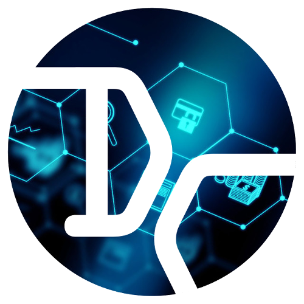

Приветствуем Вас на сайте DangerCoin
Предлагаем принять участие в добыче и раскрутке новой монеты- DangerCoin (DNGR).
DNGRcoin родилась из желания создать криптовалюту, которая была бы по-настоящему доступной для всех. Чтобы каждый без специальных знаний и подготовки мог включить майнинг криптовалюты, мог настроить мастерноду. Мы считаем, что действительно полезная криптовалюта - это та, которая легко может использоваться любым человеком.
Упор делается на более-менее асикозащищенный алгоритм добычи lyra2z, вследствие чего достигается более равномерное распределение добытых монет между участниками
Добывать монеты можно на процессоре ПК с помощью кошелька. .
У нас есть действующие проекты:
dangerbot - облачный бот для автоматической торговли на криптобиржах, использует скальпинг стратегии, и pumpbot - облачный бот для ловли пампов-дампов на криптобиржах.
Более подробно про нихтелеграмм @DangerTradingBot
Документация Описание работы бота
Дальнейшее развитие DangerCoin будет осуществляться по решениям большинства участников
Тема на bitcointalk.org DangerCoin
Страница на фейсбук facebook
Дискорд discord
Твиттер twitter
Работает телеграмм-группа для входа в хайп-проекты общей суммой